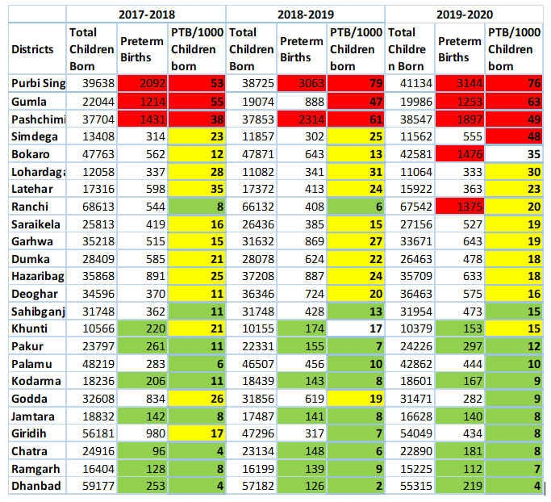
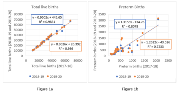
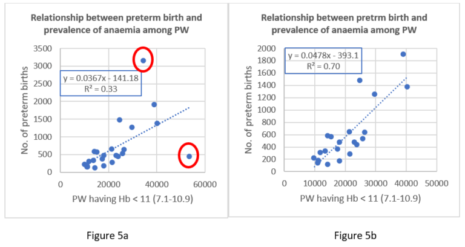
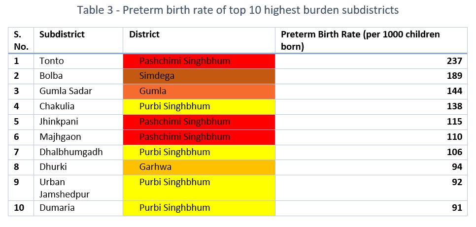

Abstract
This note analyses the data on preterm births in Jharkhand as available from the HMIS (Health Management Information System) data for the three pre-pandemic years 2017-18 to 2019-20. This data is important, both as surrogate for maternal health as well as early warning system for handling the burden of child malnutrition. We examine the consistency of the data, the burden and incidence of preterm births, and regional clusters, if any. It emerges that the districts – Gumla, Paschim Singhbhum and Purbi Singhbhum have high prevalence of preterm births. The analysis also reveals the need to pay attention to the tribal districts.
Introduction
WHO defines preterm birth as all births before 37 completed weeks of gestation, or fewer than 259 days from the first date of a woman’s last menstrual period [1]. Complications of preterm birth were the leading cause of death in children younger than five years of age globally in 2016, accounting for approximately 16% of all deaths, and 35% of deaths among new-born babies [2]. Preterm neonates who survive, are at a greater risk of a range of short-term and long-term morbidities [3]. These children also have very low catch-up growth rate and often are prone to malnutrition and mortality, contributing disproportionately to the burden of infant and child mortality. A study by Santos et al., [4] on the effect of late preterm birth over growth outcomes of children at 12 and 24 months old, concluded that compared to the children born at full term, adjusted odds of being wasted among late preterm children was 3.98 times higher (CI:1.07- 14.85) at 12 months and 1.87 times higher (CI:0.50- 7.01) at 24 months.
Data from National Family Health Survey (NFHS 4) [5] shows (Table-1) a high burden of malnutrition among children in terms of underweight, severely wasted, wasted, and stunted in Jharkhand. Since preterm birth does impact the nutritional status of a child, it is important to investigate the burden of preterm births and adopt measures to reduce it. We investigate here the HMIS data for Jharkhand for three financial years 2017-18 to 2019-20 to understand the trends and patterns of preterm births.

Methodology
Health Management Information System (HMIS) is a web-based Monitoring Information System that has been put in place by Ministry of Health & Family Welfare (MoHFW), Government of India, to monitor various indicators under the National Health Mission and provide key inputs for policy formulation and appropriate programme interventions. HMIS was launched in October 2008. Currently, around 2 lakh health facilities (across all States/UTs) are uploading facility wise service delivery data on monthly basis on HMIS web portal.
We use here, the data on total children born or live births (male) plus live births (female) and the data on number of preterm children born. We calculate preterm birth rate as number of Preterm births per 1000 live births.
Literature suggests that HMIS data might suffer from data duplication or data inconsistency due to misinterpretation of data elements and other systemic issues [6]. However, parameters related to number of children born, infant mortality and preterm deliveries are consistent across three years. The reported preterm birth data would provide at least the floor level value of incidence and the numbers can further go up if the preterm births that have not been reported are added. The analysis that follows must be viewed in this light.
To begin with, we look at the district-wise data of the number of children born, the reported number of preterm births and the incidence i.e., number of preterm births per 1000 live births (Table-2). The data prima facie appears to be consistent. The districts of Gumla, Paschimi Singhbhum and Purbi Singhbhum show high number of preterm births as well as high incidence. There are likewise 7-8 districts – Pakur (12), Palamu (10), Kodarma (9), Godda (9), Jamtara (8), Giridih (8), Chatra (8), Ramgarh (7), Dhanbad (4) with low number of preterm births and low incidence. These districts will need triangulation of the data in the field. Ranchi and Bokaro is showing unusually high number of preterm births for the year 2019-20 as compared to the two previous financial years.

To check the consistency of the data across different years, we regress the birth data as well as the data on preterm babies born for 2018-19 and 2019-20 on the 2017-18 data (Figure 1a and Figure 1b). The data are fairly consistent as seen from the linear fit with high R Square values, though in certain districts (Bokaro, Ranchi, Gumla) the numbers do fluctuate somewhat sharply across the three years

We examine at the relative contribution of different districts to children born and to the preterm births reported for the three-year period, to identify districts with disproportionate burden of preterm births.

Figure 2a and 2b above clearly bring out that Purbi Singhbhum, Paschimi Singhbhum and Gumla that account for 19%, 13% and 8%, respectively, of all the preterm births, contributing disproportionately to the total preterm births compared to the number of children born at 5%, 5% and 3% respectively. It is worth noting that these three districts are predominantly tribal districts of the state. These are followed by Bokaro (6%), Hazaribagh (5%) which are in the same proportion of the children born.
It is instructive to see if the districts with high and low incidence of preterm births form any clusters. Figure 3a shows the preterm birth rate across the subdistricts of Jharkhand. According to the colour coded clusters, Jharkhand can be divided into two parts – North-East (green belt) and South-West (red belt). The high incidence of preterm births is concentrated in South West districts of Jharkhand. Purbi Singhbhum (76), Gumla (63), Pashchimi Singhbhum (49), Simdega (48), and Lohardaga (30) are the highest burden districts in the red zone, with Khunti (15) being an outlier. Khunti’s data can be triangulated with the field survey to better understand the reasons behind its good performance, which can be a learning for neighbouring districts. We can see in Figure 3a and Figure 3b that there is an overlap in the districts that have high percentage of tribal population and districts that have high preterm birth rates i.e., Paschimi Singhbhum (67.3%), Simdega (70.8%), Gumla (68.9%), Lohardaga (56.9%) lie at the intersection of these two parameters. Purbi Singhbhum and Bokaro that lie in the red zone are in fact urban districts of Jharkhand, comprising of 55.6% and 47.7% of urban population, respectively (Census 2011), and have better accessibility to health infrastructure.

It would be interesting to see prevalence of wasting among children under 5 years of age and preterm births across the districts. A premature baby has less time in the mother’s womb (uterus) to grow and gain weight. Hence premature birth is one of the leading causes for low-birth-weight babies and this might lead to wasting among U-5 children. Figure 4a and 4b shows that there is a clear overlap in the districts (Purbi Singhbhum, Paschimi Singhbhum, Simdega, Gumla, Bokaro) that have high preterm birth rates and the districts that have high incidences of wasting among children under 5 years of age. Clusters are observed in the South West part of Jharkhand. And we need to add a line on how preterm birth contributes to wasting.)

In a study conducted [7] on the pregnant women of Jharkhand, it was observed that anaemia in pregnant women was strongly associated with preterm birth as compared to Low-Birth Weight (LBW). In Figure 5a, number of preterm births is regressed against the number of pregnant women having moderate anaemia (Hb < 11). It doesn’t show significant relationship between the two. But we have two outliers encircled in red (Purbi Singhbhum and Palamu). Removing these outliers shifts the R2 value from 0.3 to 0.7 which denotes a strong association between mild anaemia among pregnant women and preterm births.

Table-3 shows the preterm birth rates of the 10 highest burden subdistricts of Jharkhand. Tonto (237), Jhinkpani (115) and Majhgaon (110) are the high burden subdistricts of Paschim Singhbhum; Chakulia (138), Dhalbhumgadh (106), Urban Jamshedpur (92) and Dumaria (91) are the high burden subdistricts of Purbi Singhbhum. This is unusually high and needs a closer scrutiny at the PHC level.

Conclusion
Purbi Singhbhum is the highest burden district. This district also suffers from high incidence of wasting and underweight (NFHS 4). Existence of high percentage of urban population (55.6%), poses a puzzle and warrants for further investigation. The districts – Gumla, Paschimi Singhbhum and Simdega are predominantly tribal districts (Census 2011) and follows Purbi Singhbhum in terms of burden of preterm births. The least burden districts are – Dhanbad, Ramgarh, Chatra, Giridih. At the subdistrict level, Tonto of Paschimi Singhbhum has the highest burden with preterm birth rate of 237.
Given the high incidence in tribal districts, continued focus on health infrastructure strengthening for the tribal region should be a priority for Tribal Welfare Department. Once the data from the low incidence districts have been further corroborated by field visits, the approaches employed by these districts can become models for the medium to high burden districts to follow.
Future research should look to identify mothers at risk and correlates of preterm births by analysing the unit level data from HMIS. The ICDS infrastructure must be specially geared to follow up on the preterm babies and their catch-up growth. This is particularly important considering the SAAMAR (Strategic Action for Alleviation of Malnutrition and Anaemia Reduction) campaign taken up by the State government for elimination of malnutrition among children.We hope this policy brief will spur further analysis at the level of Primary Health Centre (PHC) and, where feasible, at level of individuals and contribute to improved health and nutrition status of pregnant women, nursing mothers, and children alike.
Authors:
Shaw, S. Chaudhuri, S. Agnihotri S. B.
Sweta Shaw (sweta.shaw@iitb.ac.in) is a post graduate student at CTARA IIT Bombay pursuing her master’s in technology and Development and is a UNICEF-CTARA Fellow.
Dr Sambuddha Chaudhuri (s_chaudhuri@iitb.ac.in) is a Post-Doctoral Fellow at the Centre for Policy Studies, IIT Bombay and works in the field of Public Health Policy.
Prof Satish B Agnihotri is Emeritus Fellow CTARA at IIT Bombay and works, inter alia, on Child Malnutrition, Health and Nutrition Policy.
References
- (1977), Who: Recommended Definitions, Terminology and Format for Statistical Tables Related to The Perinatal Period And Use of A New Certificate For Cause of Perinatal Deaths. Acta Obstetricia et Gynecologica Scandinavica, 56: 247-253. https://doi.org/10.3109/00016347709162009
- United Nations Inter-agency Group for Child Mortality Estimation (UN IGME), ‘Levels & Trends in Child Mortality: Report 2017, Estimates Developed by the UN Inter-agency Group for Child Mortality Estimation’, United Nations Children’s Fund, New York, 2017.
- Chawanpaiboon, Saifon, Joshua P. Vogel, Ann-Beth Moller, Pisake Lumbiganon, Max Petzold, Daniel Hogan, Sihem Landoulsi et al. “Global, regional, and national estimates of levels of preterm birth in 2014: a systematic review and modelling analysis.” The Lancet Global Health 7, no. 1 (2019): e37-e46.
- Santos, Ina S., Alicia Matijasevich, Marlos R. Domingues, Aluísio JD Barros, Cesar G. Victora, and Fernando C. Barros. “Late preterm birth is a risk factor for growth faltering in early childhood: a cohort study.” BMC pediatrics 9, no. 1 (2009): 1-8.
- International Institute for Population Sciences (IIPS) and ICF. 2017. National Family Health Survey (NFHS-4), 2015-16: India. Mumbai: IIPS.
- Kumar, R.K., 2018. Quality Issues in the Health Management Information System. Economic & Political Weekly, 53(45), p.23.
- Kumari, S., Garg, N., Kumar, A., Guru, P. K. I., Ansari, S., Anwar, S., … & Sohail, M. (2019). Maternal and severe anaemia in delivering women is associated with risk of preterm and low birth weight: A cross sectional study from Jharkhand, India. One Health, 8, 100098.
Download this policy brief in PDF format from following link
Suggested citation: Shaw, S., Chaudhuri, S., & Agnihotri, S. B. (2021). Preterm delivery patterns in Jharkhand as revealed by HMIS data 2017-18 to 2019-20. Nutrition Group, IIT Bombay.